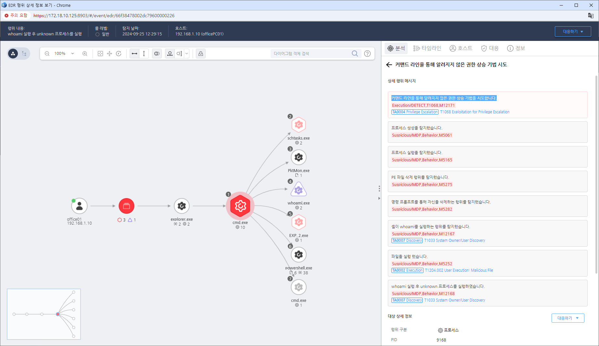

T1068.000.03 Windows ring buffer LPE
D3FEND
MITRE ATT&CK 액션을 기준으로 대응 방안을 작성
Detection
실제 공격자가 사용하는 사례를 바탕으로 계정 확인(whoami) 이후 악성 프로세스를 실행하고 다시 한번 계정 확인(whoami) 시 탐지
Detection(EDR)

Response
- 모니터링: 시스템에서 권한 상승과 관련된 비정상적인 프로세스를 모니터링하고, 시스템 취약점을 악용하는 시도를 탐지한다. 특히 비정상적인 커널 모드 프로세스나 시스템 서비스의 변경을 주시한다.
- 엔드포인트 보호: 권한 상승 시도를 탐지하는 엔드포인트 탐지 및 대응(EDR) 솔루션을 사용하여 비인가된 권한 상승을 차단한다.
- 이벤트 로그 분석: 시스템 이벤트 로그에서 관리자 권한 획득이나 권한 상승 시도와 관련된 이벤트를 분석하고, 의심스러운 권한 변경 활동을 검토한다.
- 취약점 스캐닝: 시스템에서 알려진 권한 상승 취약점이 있는지 정기적으로 스캔하고 대응한다.
Mitigations
최신 패치 적용
- 운영체제와 소프트웨어에 대해 최신 보안 패치를 적용하여 알려진 취약점이 악용되지 않도록 한다.
권한 관리
- 최소 권한 원칙을 적용하여 관리자 권한이 불필요한 사용자나 프로세스가 높은 권한을 가지지 않도록 한다.
애플리케이션 제어
- 비인가된 프로그램이나 파일이 시스템에 설치되지 않도록 애플리케이션 제어 정책을 설정한다.
취약점 완화
- 권한 상승 취약점에 대한 취약점 완화 기술(예: ASLR, DEP)을 적용하여 공격 가능성을 줄인다.
정기적 감사
- 시스템 권한 설정과 권한 상승 활동을 정기적으로 감사하여 비정상적인 권한 사용을 탐지한다.
Affected Techniques
Action 실행시 함꼐 영향을 받는 다른 Techniqes
| D3FEND |
| D3-VAM Vulnerability Assessment Monitoring |